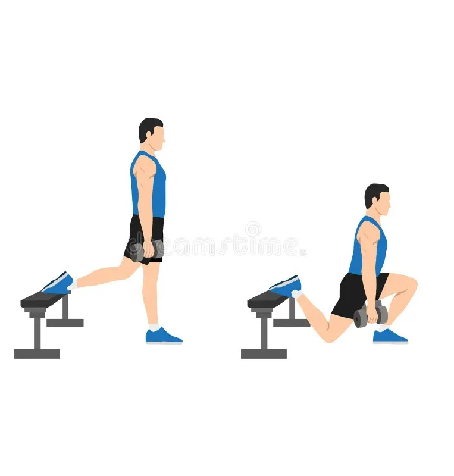

Exercise Description
Stand a few feet in front of a bench, placing one foot on the bench behind you. Lower your body by bending the front knee until the thigh is parallel to the ground, then push back up to the starting position.
Reps and Sets
Beginners: 3 sets of 12-15 reps per leg
Weights: 15-20 kg dumbbells per hand
Rest time between each set: 45secs
Video Implementation